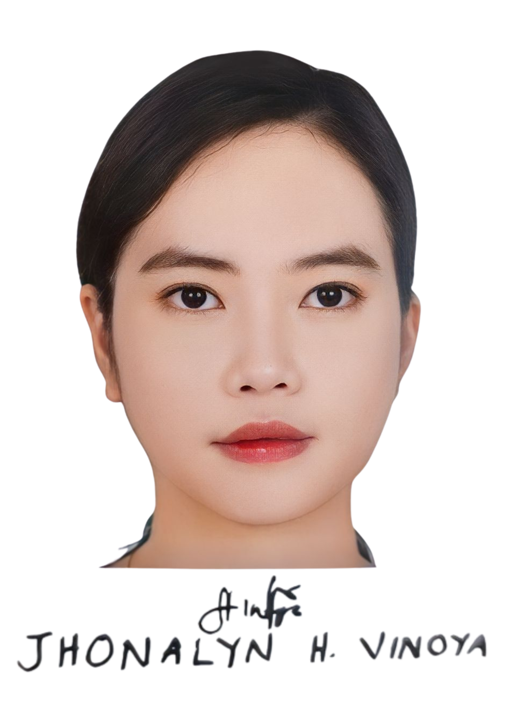

Jhonalyn Vinoya

Summary
I am a BSCpE graduate engineer with a strong knowledge of computer engineering.
Skilled in hardware design, software development, and computer networks, I am passionate about leveraging technology to drive innovation.
I have experience in C++, Java, and Python and thrive in collaborative environments.
Seeking opportunities to contribute to the field of computer engineering.
Education
- Bachelor of Science in Computer Engineering
University of Perpetual Help System Laguna
Sto. Niño Biñan City, Laguna
2019-2023
Work Experience
- Service Crew - McDonald's
Mamplasan Caltex Southhub
2019-2022
- I provided excellent customer service, operated various equipment, handled transactions, and contributed to maintaining a clean and organized environment.
- I worked collaboratively with a team to ensure efficient service and uphold the brand's standards.
- Barista - McDonald's
Biñan Highway
2022-2023
- I crafted and served high-quality coffee beverages, maintained equipment, and ensured a welcoming atmosphere for customers.
- I demonstrated proficiency in handling diverse coffee recipes and collaborated with colleagues to enhance the overall dining experience.
Skills
Technical Skills
- Logic Circuits
- CSS, HTML, C/C++, Java, PHP, MySQL, Arduino
- MS Visual Studio, Android Studio, NetBeans 8.2 IDE
- Troubleshooting
Computer Skills
- MS Office: Word, Excel, PowerPoint
- Google Drive
- Email
- Presentations/ Slideshows
Design Skills
- UX/UI Design
- Web: HTML, minimal knowledge in CSS
- Graphic Design
Other